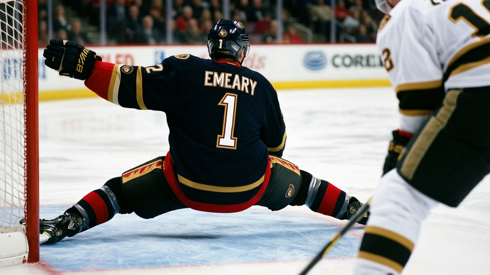

I Saw Him When: Ray Emery Tried Out for 8 Junior Teams and Made None
The 4th-round pick from a farmhouse near Cayuga carries a potential figure of 98, the 4th-highest on the under-23 board, and has played 60 minutes this season.
 Pete LarocqueScouting editor · The Prospect File
Pete LarocqueScouting editor · The Prospect File
Ray Emery80 carries a potential figure of 98 in the Bureau's Book. Among the 40 highest-graded under-23 players in the league, only  Rick DiPietro83, Scottie Upshall77 and Steve Eminger75 carry a higher number. All three are at 99.
Rick DiPietro83, Scottie Upshall77 and Steve Eminger75 carry a higher number. All three are at 99.
Emery has played 1 game. The  Ottawa Senators goaltender logged 60 minutes this season, allowed 2 goals, and took the win. Ottawa has played 35.
Ottawa Senators goaltender logged 60 minutes this season, allowed 2 goals, and took the win. Ottawa has played 35.
Four goalies, 1 game, and 12 months left
Ottawa Senators carries 4 goaltenders on its roster.  Patrick Lalime90, 92 overall, has 29 starts and 1,729 minutes. Martin Prusek, 83 overall, has 14 starts. Emery has 1. Simon Lajeunesse78, 78 overall, has not dressed.
Patrick Lalime90, 92 overall, has 29 starts and 1,729 minutes. Martin Prusek, 83 overall, has 14 starts. Emery has 1. Simon Lajeunesse78, 78 overall, has not dressed.
The depth chart and the potential column run in opposite directions. Lalime is 92 overall and 92 base, with no room on the Book. Prusek sits at 83 on a base of 82. Lajeunesse carries a potential of 82. Emery's potential is 98.
His contract pays $0.60M and has 1 year remaining. Ottawa will need to re-sign him, trade him, or let him walk by next summer. None of those options is urgent yet.
| Goaltender | Overall | Base | GP | W | L | GA | SO | Minutes |
|---|---|---|---|---|---|---|---|---|
| Patrick Lalime | 92 | 92 | 29 | 12 | 14 | 109 | 1 | 1,729 |
| Martin Prusek | 83 | 82 | 14 | 5 | 5 | 35 | 0 | 730 |
| Ray Emery | 82 | 80 | 1 | 1 | 0 | 2 | 0 | 60 |
| Simon Lajeunesse | 78 | 75 | 0 | 0 | 0 | 0 | 0 | 0 |
What the card says
His hockey IQ is the standout. INTE reads 90, a number that belongs on a top-line center. SREC sits at 86. REBC is 85. POKE is 83. He reads the play before it develops and controls the rebound.
The body doesn't match the brain. TOUG is 50. FIGH and FLOP sit at 51 each. For a goaltender, that can work. An INTE of 90 covers ground that toughness usually handles.
Emery's base grade is 80. The Development Index has him at +1, so his overall reads 82. He isn't in a hot streak. This is his 2nd NHL season, 7 career games.
The farmhouse and the 8 tryouts
Emery was born Raymond Robert Nichols in Hamilton, Ontario, on September 28, 1982. His mother ran an overhead crane at a Dofasco steel mill. Paul Emery married her in 1986 and Raymond took the family name. They lived in a century-old farmhouse outside Cayuga, a small town on the Grand River in southern Ontario.
He played defense until he was 9. The local league ran short on goaltenders. He went in net.
At 16, he tried out for 8 junior teams. He made none. The Ontario Junior Hockey League's Junior C Dunnville Terriers took him anyway. He won the league's Rookie of the Year award.
Sault Ste. Marie drafted him in the 5th round of the 1999 OHL Draft. Two seasons later he was the OHL's Goaltender of the Year, setting a league record with 33 wins and a 2.73 goals-against average. Ottawa took him 99th overall in the 4th round of the 2001 NHL Entry Draft.
His AHL season at Binghamton in 2002-03 brought an All-Star selection, an All-Rookie team spot and the team's MVP award. It also brought 2 suspensions, one for a referee bump, one for an on-ice altercation. That INTE grade didn't keep him off the suspension sheet.
What the Index doesn't answer
The Book projects 98. His card reads 82 today, and the Index at +1 says the floor is holding.
A 99th-overall pick from a farmhouse near Cayuga who tried out for 8 junior teams and made none carries the 4th-highest potential figure among the league's 40 best-graded under-23 players. He has 12 months on his deal.
Ottawa is 14-14-4 with 38 points, 2nd in the Northeast Division. The core around him includes  Daniel Alfredsson88 at 90,
Daniel Alfredsson88 at 90,  Martin Havlat86 at 88 and
Martin Havlat86 at 88 and  Wade Redden83 at 85. The goaltending in front of all that is a starter at 92 with no room on the Book and a 22-year-old with 98 potential sitting 4th on the depth chart. Ottawa hasn't published a plan.
Wade Redden83 at 85. The goaltending in front of all that is a starter at 92 with no room on the Book and a 22-year-old with 98 potential sitting 4th on the depth chart. Ottawa hasn't published a plan.